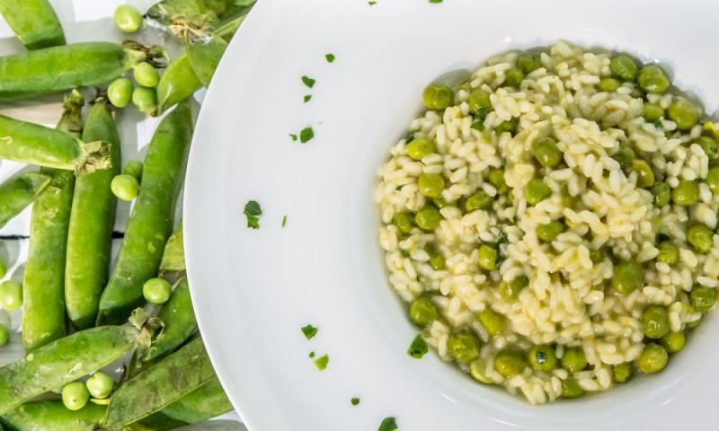

RISI e BISI
Receta Italiana

Risi e bisi es una típica sopa del Véneto, espesa y sustanciosa. Se prepara con arroz sopero, arvejas frescas y un sofrito de cebolla y panceta.
Ingredientes
- Queso Parmesano 100 grs.
- Manteca 50 g
- Ajo 1 Diente
- Arroz vialone nano 400 g
- Cebolla de verdeo 1 Unidad
- Caldo de arvejas
- Perejil 1 cda.
- Panceta ahumada 50 g
- Aceite de oliva 2 cdas.
- Apio 1 Tallo
Caldo de arvejas
- Arvejas 500 g
- Caldo de gallina 3 L
Paso a Paso
- En una cacerola lleve el caldo a ebullición y cocine las arvejas.
- Pique finamente la panceta, el ajo y la cebolla de verdeo.
- Corte el apio en cubos pequeños.
- Ralle el queso con la parte fina del rallador.
- Corte la manteca en cubos.
- Pique el perejil.
- En una cacerola de barro caliente con aceite de oliva rehogue la panceta con la cebolla de verdeo, el apio y el ajo.
- Agregue el arroz y saltee unos segundos.
- Incorpore la mitad del caldo caliente con las arvejas y deje cocinar unos minutos.
- Añada el resto del caldo poco a poco y termine la cocción hasta que el arroz esté tierno.
- Retire del fuego y agregue la manteca, el perejil y el queso rallado.
- Revuelva hasta que la manteca se funda.
Caldo de arvejas
- Desprenda las arvejas de sus vainas.
- En una cacerola lleve el caldo a hervor con las vainas de las arvejas y deje cocinar durante 2 horas a fuego lento.
- Pase el caldo a través de un tamiz.